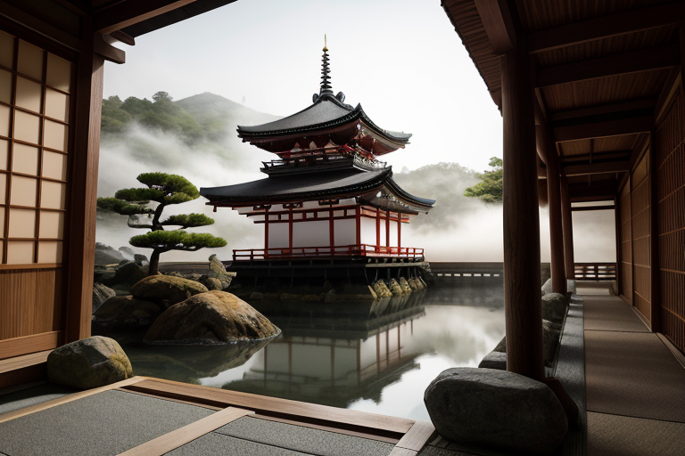
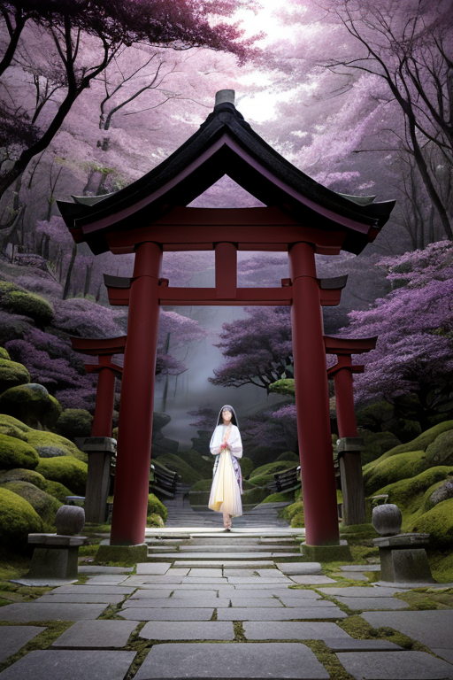
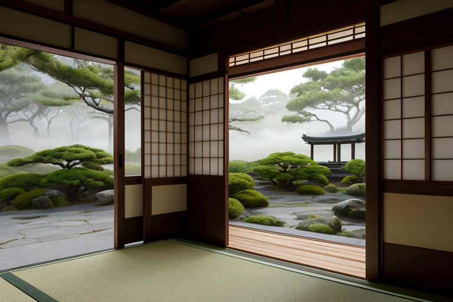
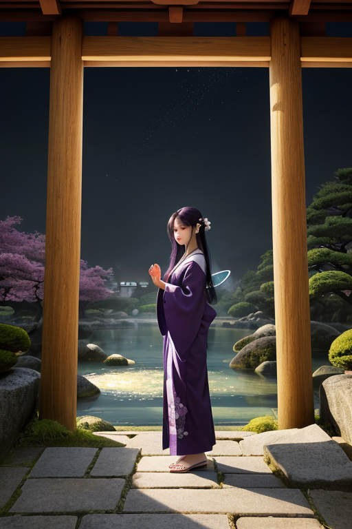
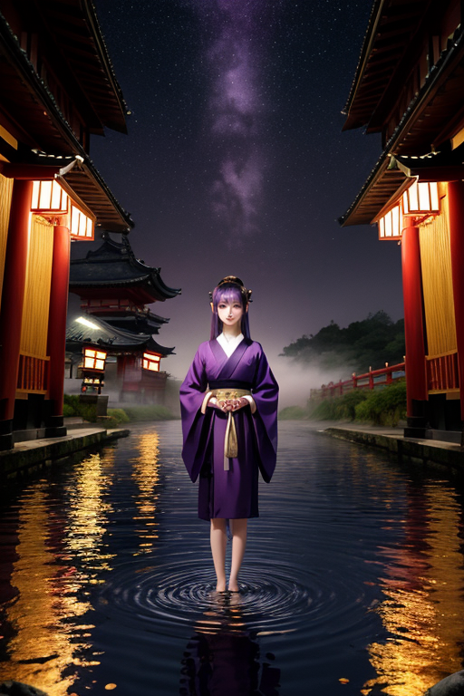

第一章 現実の京都
あなたはまだ気づいていない。この土地にも、王がいることを。
清水寺の舞台から見下ろす京の街は、朝靄に霞み、静かだった。観光客のざわめきが始まる前の、この一瞬。石畳に残る夜露が、千年の歴史を僅かに濡らしている。伏見稲荷の朱い鳥居の連なりは、山肌に刻まれた巨大な封印の紋様のようだ。その静寂の底で、地殻の「歪み」は、ゆっくりと、しかし確実に蓄積されていた。
キョウトリア・シールは、その歪みを感じながら、金閣寺の池の畔に立っていた。鏡のような水面に映るのは、煌びやかな舎利殿ではなく、地中を流れる無数の亀裂の光だった。彼の役目は、それを封じること。地震のエネルギーを一段階緩め、崩れるはずの梁を一本支え、逃げ遅れる命に数秒の猶予を与えること。彼は無感情に調整を続けてきた。ただ、調整のたびに、何かがこの街から失われていく気がしていた。守るために、封じるために。

第二章「歪みの兆候」
伏見稲荷大社の千本鳥居を、無数の祈りが通り抜けていく。受験合格、商売繁盛、無病息災。それら願いの熱量は、朱の柱に触れるたび微かに振動し、地中へと浸透する。キョウトリア・シールは、その一つひとつを感知していた。祈りは土地の感情であり、時に歪みの共鳴源となる。今日も、ある過剰な執念が地盤の微妙なひずみと同調し、小さなクラックを生み出そうとしていた。
彼は目を閉じた。シレアが結界を張り、カグラリスが雅の調べで歴史波動を整える。王は自らの封印印章を、目に見えぬ亀裂の上に静かに押す。祈りそのものを否定はしない。ただ、そのエネルギーが地殻を刺激する「きっかけ」を、ほんの一瞬、遅らせる。朱の柱一本が、かすかに軋む音を立てる。歪みは封じられた。代わりに、あの祈りを捧げた者の心に、ほんの些細な「諦め」に似た感情が、ふわりと落ちたかもしれない。
守ることは、封じること。封じることは、ある可能性を閉ざすこと。キョウトリア・シールは、薄紫の夕闇に染まる鳥居の参道を見つめた。彼が調整するたび、この街の何かが、かつての奔放なエネルギーを失い、深い静寂へと沈んでいく。

第三章 王の葛藤
嵐山の竹林は、風の通らぬ深い静寂に包まれていた。キョウトリア・シールは、その一本の竹の前に立つ。彼の封印は、この地の歴史の「揺らぎ」を、石のように固く、苔むした記憶へと定着させる。応仁の乱の狂気も、維新の熱狂も、すべては結界の内側で色褪せた巻物となった。
彼は自問する。この静寂は、守られているのか、それとも窒息しているのか。彼が地震の歪みを一段階緩和する時、同時に封じ込めているのは、破壊の後の新たな萌芽かもしれない。明治の遷都で失われかけた古都の魂を守るために、彼はこの街の「変化」そのものに、目に見えない封印を施してきたのではないか。
手のひらに浮かぶ紫と金の紋章が微かに脈打つ。感情という歪み。彼はそれを感じ始めていた。守りたいという想い。それは、この町家の格子戸のように、外との交わりを細かく選別することだった。彼は、ただ調整者であることを望みながら、知らず知らずのうちに、愛着という名の管理者となっていた。

第四章 封印の祈り
「王よ、あなたの祈りは、何を閉ざそうとしていますか」
シレアの声は、清水寺の舞台から見下ろす京の街並みのように、静かで深かった。彼女は、王の手のひらに浮かぶ紋章を、紫の瞳で見つめている。その目には、千年の結界を維持してきた者の、穏やかな諦念が宿っていた。
「この街の魂を守るために、私は『変化』に封印を施してきた。過ぎ去る時を、少しだけ遅らせる微調整を」王は答えた。鴨川のせせらぎが、彼の言葉を運ぶ。
「それは同時に、新しい命の芽吹きをも、遅らせているかもしれません」カグラリスが、舞妓の衣装のように優雅に首をかしげた。「応仁の乱の焼け跡から這い上がった京の力は、破壊と再生の繰り返しにこそ宿りました。封印は守りですが、時には…棺にもなります」
王は目を閉じた。手のひらの紋章が、微かに熱を持つ。彼が愛着ゆえに閉ざしてきたもの。それは、この街が自ら傷つき、また立ち上がる「可能性」そのものではなかったか。守ることは、自由を奪うこと。その矛盾の重さが、彼という存在に、初めて「苦しみ」という感情を刻み始めていた。

第五章 微調整と余韻
鴨川の水面は、夕闇に溶ける紫を静かに映していた。キョウトリア・シールは川縁に立ち、目を閉じる。掌の封印印章が、街の精神波を感じ取る。応仁の乱の無念、明治の遷都の喪失感、そして今、訪れる人々の期待と、住む人々の覚悟。それら全てが織りなす「歪み」は、地震のそれとは質を異にし、より深く、静かに地脈を揺さぶる。
彼は結界を張らない。代わりに、自らの存在を微かに共振させた。清水寺の舞台から漏れる観光客の歓声を、竹林の風がそっと包み込む。伏見稲荷の朱の鳥居をくぐる祈りを、金閣の鏡像が一度、深く沈殿させる。彼は調整する。過剰な熱狂を冷まし、深すぎる諦観に微かな風を通す。守るとは、この街の持つ「静寂」という器を保つこと。その器が満ちすぎず、空になりすぎないよう、目に見えない水位を計る。
だが彼は知っている。この静寂を守ることで、爆発的な革新や、劇的な変化の芽を、無意識のうちに摘み取ってきたかもしれない。守ることは、時に可能性への蓋となる。その自覚が、彼の内に確かな「苦しみ」として定着した。彼はそれを受け入れ、今日も微調整を続ける。なぜなら、この苦しみこそが、彼を「王」から「守り手」へと変えた、かけがえのない感情だったから。
嵐山に最後の光が消える時、彼の姿も闇に溶けた。ただ、石畳を伝う夜露が、いつもよりほんの少し、澄んでいるように感じられた。
あなたの町にも、王がいる。